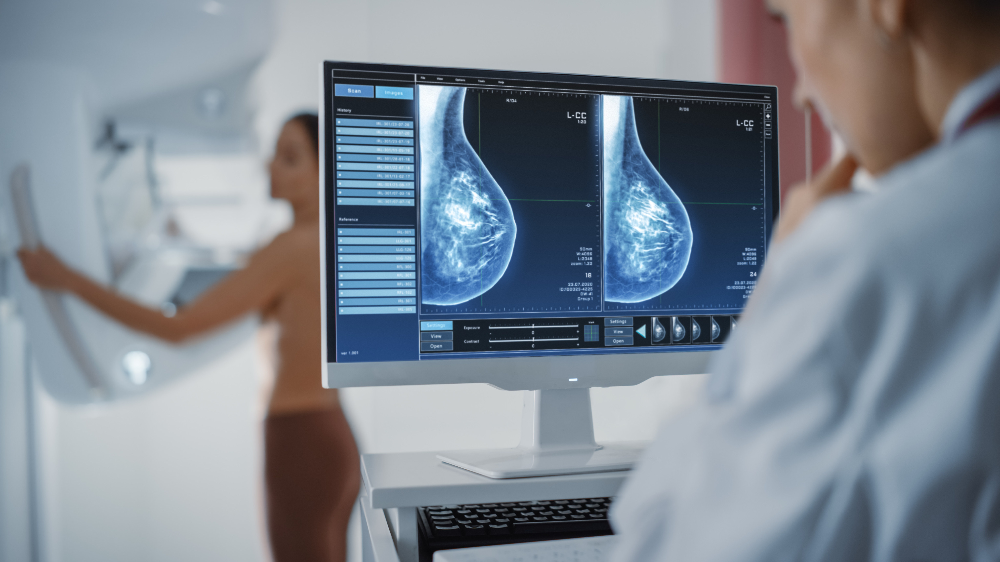
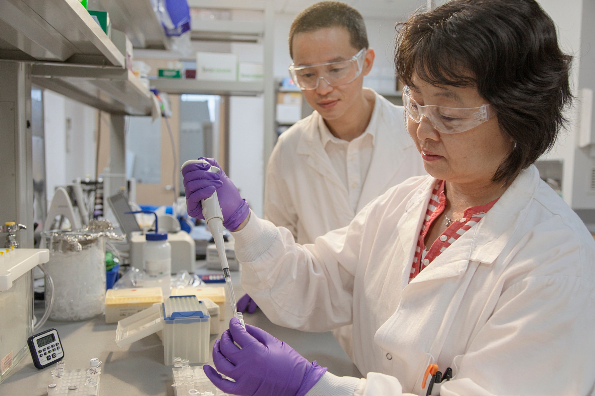
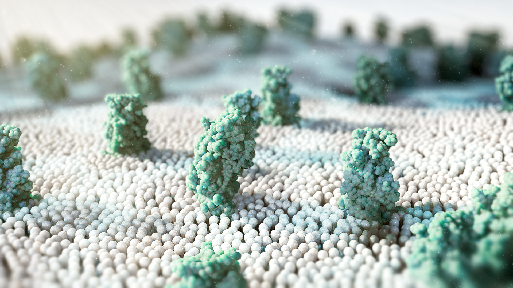

CID C50
Câncer de mama
Entenda os sinais, o diagnóstico e o tratamento do câncer de mama.
O que é o câncer de mama?
O câncer de mama é um grupo de tumores malignos que se desenvolvem nas glândulas mamárias. A maioria desses tumores tem origem nos ductos, estruturas responsáveis por conduzir o leite até o mamilo, ou nos lóbulos, que fazem parte do tecido glandular da mama.1
A doença é considerada heterogênea, o que significa que diferentes tumores podem apresentar características biológicas e moleculares distintas. Essas diferenças ajudam a explicar por que o câncer de mama pode evoluir de maneiras diferentes entre as pessoas e por que nem todos os tumores respondem da mesma forma aos tratamentos.1,3
Além do local de origem, características como a presença dos receptores de estrogênio, progesterona e HER2 são importantes para definir o perfil do tumor e podem contribuir para a escolha da estratégia terapêutica mais adequada.1
Câncer de mama no mundo
Segundo o Global Cancer Observatory (GLOBOCAN 2024), o câncer de mama está entre os cânceres de maior impacto global.2 As taxas de incidência e mortalidade variam entre diferentes regiões do mundo.2
2,43 milhões2
novos casos de câncer de mama em 2024.
693,7 mil2
mortes relacionadas à doença em 2024.
2º câncer mais diagnosticado2
considerando homens e mulheres e todos os tipos de câncer.
4ª principal causa de morte por câncer2
em todo o mundo.
Quais são os fatores associados ao risco de câncer de mama?
O desenvolvimento do câncer de mama é multifatorial. Isso significa que diferentes características genéticas, hormonais, ambientais e relacionadas ao estilo de vida podem contribuir para o risco.1
Alguns fatores não podem ser modificados, enquanto outros estão relacionados a hábitos e exposições que podem ser modificados ao longo da vida.1
Fatores NÃO MODIFICÁVEIS associados ao câncer de mama:
- aumento da idade;1
- predisposição genética;1
- alterações em genes relacionados ao câncer hereditário, como BRCA1 e BRCA2, além de PALB2, TP53, PTEN, STK11 e NF1;1
Fatores MODIFICÁVEIS associados ao câncer de mama:
- obesidade;1
- consumo aumentado de álcool;1
- sedentarismo;1
- exposição a determinados hormônios exógenos;1
- exposição à radiação.1
Quais são os sinais e sintomas do câncer de mama?
Uma das manifestações mais comuns é o surgimento de um nódulo na mama, que frequentemente é indolor. É importante considerar que a maioria das massas mamárias é benigna, mas qualquer alteração persistente precisa ser adequadamente avaliada.1
Outros sinais que podem estar presentes incluem:
- nódulo na mama ou na axila;1
- aumento de volume ou alteração no formato e tamanho da mama;1
- alterações na pele da mama;1
- vermelhidão;1
- retrações ou pequenas depressões na pele;1
- ulcerações;1
- aspecto de “casca de laranja”;1
- inversão ou outras alterações no mamilo;1
- saída de secreção pelo mamilo.1
Dor na mama é extremamente comum e, quando ocorre isoladamente, sem outros sinais, raramente é a forma de apresentação do câncer de mama.1
A presença de uma alteração não confirma a existência de câncer. Diferentes condições benignas também podem provocar nódulos ou mudanças nas mamas. A investigação médica é necessária para estabelecer a causa.
Por que existem diferentes tipos de câncer de mama?
O câncer de mama é uma doença heterogênea. Isso significa que diferentes tumores podem apresentar características celulares, genéticas e moleculares distintas. Além disso, pode existir diversidade até mesmo entre as células que formam um único tumor.3
Essa heterogeneidade ajuda a explicar por que duas pessoas com câncer de mama podem apresentar evoluções diferentes ou responder de formas distintas ao mesmo tipo de tratamento.3
O que é câncer de mama HER2-positivo?
O HER2 é uma proteína relacionada ao crescimento e à proliferação celular. Alguns tumores apresentam aumento da expressão dessa proteína ou alterações relacionadas ao gene responsável por sua produção.1
Determinar se o tumor apresenta positividade para HER2 é importante porque essa característica interfere no comportamento da doença e também pode indicar a possibilidade de tratamentos direcionados especificamente contra esse alvo.1
A avaliação de HER2, juntamente com os receptores de estrogênio e progesterona, faz parte da caracterização biológica do câncer de mama.1
O que é câncer de mama triplo-negativo?
O câncer de mama é chamado de triplo-negativo quando as células tumorais não apresentam expressão dos receptores de estrogênio, progesterona e HER2.1
Como esses três alvos não estão presentes, tratamentos direcionados especificamente aos receptores hormonais ou ao HER2 não atuam da mesma maneira nesse grupo de tumores. Por isso, a definição correta do perfil biológico é essencial para orientar a escolha do tratamento.1
Os tumores triplo-negativos apresentam características biológicas próprias e, em geral, comportamento mais agressivo. Também existe associação entre esse tipo de câncer e alterações no gene BRCA1.1
Análises moleculares permitiram identificar diferentes subtipos de câncer de mama, entre eles os subtipos luminal A, luminal B, HER2-enriquecido e basal-like.3
Na prática clínica, características como a presença ou ausência dos receptores de estrogênio (ER), receptores de progesterona (PR) e HER2 também são fundamentais para caracterizar o tumor e orientar as opções terapêuticas.1,3
O que são receptores hormonais?
Algumas células do câncer de mama apresentam proteínas capazes de responder a hormônios, principalmente estrogênio e progesterona. Esses receptores são avaliados no tecido tumoral porque fornecem informações importantes sobre a biologia da doença e sobre possíveis estratégias de tratamento.1,4
O receptor de progesterona, chamado de PR, está intimamente relacionado à sinalização do receptor de estrogênio alfa (ERα). Sua expressão depende da ação do estrogênio e pode fornecer informações sobre o funcionamento dessa via hormonal no tumor.4
O PR também apresenta valor prognóstico, especialmente nos tumores positivos para receptores hormonais. Uma expressão elevada de PR é observada com maior frequência em tumores com características relacionadas a melhor prognóstico basal, como o subtipo luminal A, do que em tumores luminais B.4
Por isso, avaliar ER e PR não serve apenas para classificar a doença: essas informações ajudam a compreender a biologia do câncer e podem influenciar as decisões terapêuticas.1,4

Como é feito o diagnóstico do câncer de mama?
Quando existe uma alteração suspeita, a investigação reúne diferentes tipos de avaliação. Um modelo utilizado para investigar alterações da mama é a chamada avaliação tripla, que combina:1
- histórico clínico e exame das mamas;1
- exames de imagem;1
- biópsia de lesões suspeitas.1
Nenhuma dessas etapas deve ser avaliada isoladamente. As informações clínicas, radiológicas e patológicas se complementam para caracterizar adequadamente uma alteração.
Durante o exame físico, são avaliadas as duas mamas, a pele, os mamilos, as axilas e os linfonodos regionais.1
O profissional observa alterações como retrações da pele, vermelhidão, cicatrizes, massas, mudanças no mamilo ou secreções. A palpação permite avaliar diferenças na textura do tecido mamário, identificar nódulos e examinar os linfonodos das axilas e outras regiões próximas.1
As características de um nódulo também fornecem informações importantes. Massas benignas costumam apresentar características diferentes das lesões malignas, embora apenas a investigação completa possa estabelecer o diagnóstico.1
Os exames de imagem ajudam a identificar e caracterizar alterações encontradas na mama. Entre os métodos utilizados estão a ultrassonografia e a mamografia.1
A ultrassonografia permite examinar de forma direcionada uma alteração palpável, enquanto a mamografia ajuda a caracterizar a área suspeita e avaliar outras regiões do tecido mamário.1
Em situações específicas, outros exames podem complementar a investigação. A ressonância magnética, por exemplo, pode fornecer informações adicionais sobre o tamanho do tumor ou contribuir para determinadas decisões relacionadas ao tratamento.1
Quando existe suspeita de que a doença tenha alcançado outras regiões do organismo, exames adicionais de imagem podem ser empregados para investigação de metástases.1
Por que a biópsia é importante?
A biópsia permite retirar uma amostra da região suspeita para análise em laboratório. É essa avaliação que confirma a presença das células tumorais e fornece informações importantes sobre suas características.1
Além de confirmar o diagnóstico, a análise do tecido pode determinar:
- características histológicas do tumor;1
- grau tumoral;1
- presença dos receptores de estrogênio;1
- presença dos receptores de progesterona;1
- expressão de HER2.1

O que é o estadiamento do câncer de mama?
Depois da confirmação do diagnóstico, é necessário compreender a extensão da doença. O estadiamento considera informações sobre o tumor, os linfonodos e a presença ou ausência de metástases.1
O sistema TNM utiliza três componentes principais:
T – Tumor: considera características relacionadas ao tamanho e à extensão do tumor;1
N – Nódulos/linfonodos: avalia o envolvimento dos linfonodos regionais;1
M – Metástase: indica se existe disseminação da doença para regiões distantes do organismo.1
Além da extensão anatômica, informações como o grau tumoral e a expressão dos receptores de estrogênio, progesterona e HER2 podem ser incorporadas à avaliação prognóstica.1
Por que conhecer as características moleculares do tumor é importante?
Dois tumores localizados no mesmo órgão e aparentemente semelhantes ao microscópio podem apresentar alterações moleculares diferentes. A compreensão dessas diferenças tornou o câncer de mama cada vez mais uma doença tratada de acordo com suas características biológicas.3,5
Os testes genéticos e moleculares podem avaliar tanto padrões de expressão de genes quanto alterações específicas no DNA. Essas informações podem ajudar na classificação mais precisa da doença, na estimativa do prognóstico e na identificação de tratamentos que podem ser mais adequados a determinados tumores.5
A caracterização molecular também ajuda a lidar com a grande heterogeneidade do câncer de mama, permitindo que as decisões sejam cada vez mais individualizadas.3,5

Qual é o papel dos testes genéticos no câncer de mama?
Os testes genéticos podem ter diferentes objetivos, e não são todos iguais.
Alguns investigam alterações hereditárias, presentes desde o nascimento e que podem estar relacionadas à predisposição ao câncer. Outros analisam alterações encontradas no próprio tumor e que podem ter implicações para o tratamento.5
A indicação e a interpretação desses testes dependem das características de cada pessoa e de cada tumor e precisam ser discutidas com a equipe médica.
Genes como BRCA1 e BRCA2 estão entre os mais conhecidos relacionados à predisposição hereditária ao câncer de mama, mas outras alterações genéticas também podem estar envolvidas.1,5
Em pacientes com doença inicial, testes multigênicos baseados na expressão de diversos genes podem, em determinadas situações, fornecer informações sobre prognóstico e auxiliar decisões relacionadas ao tratamento adjuvante.5
Na doença metastática, a identificação de determinadas alterações genéticas no tumor também pode apontar características que tenham implicações terapêuticas.5
O que são biomarcadores?
Biomarcadores são características biológicas que podem fornecer informações sobre a doença, seu comportamento ou sua possível resposta a determinado tratamento.6 No câncer de mama, ER, PR e HER2 estão entre os biomarcadores tradicionalmente utilizados para caracterizar o tumor.1,6
Além deles, o desenvolvimento da pesquisa molecular permitiu incorporar outros marcadores e testes capazes de fornecer informações prognósticas ou preditivas. Alguns testes analisam simultaneamente a atividade de vários genes para estimar características relacionadas ao comportamento do tumor.5,6
É importante distinguir dois conceitos:
Biomarcador prognóstico: fornece informações relacionadas à provável evolução da doença;6
Biomarcador preditivo: pode ajudar a estimar a possibilidade de resposta a determinado tipo de tratamento.6
A utilização dessas informações contribui para um tratamento cada vez mais personalizado.
Como é definido o tratamento do câncer de mama?
Não existe um único tratamento adequado para todos os casos. A estratégia depende da extensão da doença, das características do tumor, do perfil dos receptores e de outros fatores individuais.1,6
O tratamento pode envolver diferentes modalidades, utilizadas isoladamente ou em combinação:
Nos casos em que a cirurgia faz parte do tratamento, o objetivo inclui remover o câncer e obter informações importantes para o estadiamento patológico.1
Uma possibilidade é a cirurgia conservadora da mama, na qual o tumor e uma margem de tecido ao redor são removidos, preservando parte da mama. Outra possibilidade é a mastectomia, que envolve a remoção da mama e pode ser indicada conforme características do tumor, possibilidade de realização de radioterapia, resultados esperados e preferência da paciente.1
Os linfonodos axilares também podem precisar ser avaliados para verificar se existem células tumorais nessa região. Uma das estratégias é a biópsia do linfonodo sentinela, que analisa os primeiros linfonodos para os quais a região da mama realiza drenagem linfática.1
Após uma mastectomia, também podem ser discutidas possibilidades de reconstrução mamária, considerando as características e as preferências individuais.1
A radioterapia utiliza radiação para destruir células tumorais e reduzir o risco de retorno da doença em determinadas situações.1
É frequentemente utilizada após cirurgia conservadora da mama e também pode fazer parte do tratamento após uma mastectomia quando existem características relacionadas a maior risco.1
A quimioterapia utiliza medicamentos que atuam nas células tumorais e pode ser empregada em diferentes momentos do tratamento.1,6
Quando utilizada antes da cirurgia, é chamada de tratamento neoadjuvante. Essa estratégia pode ajudar a reduzir o tamanho do tumor antes do procedimento e também permite avaliar como a doença responde ao tratamento.1
Quando o tratamento sistêmico é realizado após a cirurgia, o objetivo adjuvante inclui eliminar células tumorais microscópicas que possam permanecer no organismo e reduzir o risco de recorrência.1
A necessidade de quimioterapia depende das características clínicas e biológicas de cada tumor.
Tumores que apresentam receptores hormonais podem responder a tratamentos que interferem na ação ou na produção de hormônios.1,4
A presença de ER e PR no tumor ajuda a identificar a relação da doença com a sinalização hormonal e fornece informações úteis para a escolha terapêutica.1,4
Existem diferentes estratégias de terapia endócrina, cuja indicação depende de fatores como características do tumor e situação hormonal da paciente.1
O conhecimento sobre alterações moleculares do câncer de mama possibilitou o desenvolvimento de medicamentos direcionados a características específicas das células tumorais.6
Um dos exemplos mais estabelecidos é o tratamento dirigido ao HER2 nos tumores que apresentam essa alteração.1
O avanço dos estudos sobre biomarcadores, alterações genéticas e mecanismos de resistência continua ampliando a possibilidade de selecionar tratamentos de maneira mais individualizada.5,6
Por que o cuidado multidisciplinar é importante?
O diagnóstico e o tratamento do câncer de mama podem envolver diferentes especialidades. A abordagem multidisciplinar permite que os achados clínicos, radiológicos, patológicos e moleculares sejam avaliados em conjunto.1
A equipe pode incluir:
- cirurgiões especializados em mama;1
- oncologistas;1
- radiologistas;1
- patologistas;1
- profissionais de enfermagem;1
- psicólogos;1
- fisioterapeutas;1
- geneticistas.1
A composição da equipe varia conforme as necessidades de cada pessoa.
A combinação das diferentes áreas permite definir uma estratégia centrada na paciente, considerando não apenas a extensão do câncer, mas também sua biologia, as possibilidades terapêuticas e aspectos relacionados à qualidade de vida.1
Não espere os sintomas piorarem!
Quando procurar avaliação médica?
Alterações novas ou persistentes nas mamas devem ser avaliadas, especialmente quando envolvem um nódulo, mudanças no formato da mama, alterações da pele ou do mamilo ou presença de secreção.1
Esses sinais não significam necessariamente câncer, já que muitas alterações mamárias têm causas benignas. No entanto, uma avaliação adequada permite identificar a origem da alteração e definir se exames complementares são necessários.1 O câncer de mama reúne diferentes doenças com características biológicas distintas. Conhecer o perfil de cada tumor — incluindo sua extensão, seus receptores e suas características moleculares — é uma parte importante do processo de diagnóstico e da escolha do tratamento.1,3,5,6
Referências
1. Katsura C, Ogunmwonyi I, Kankam HKN, Saha S. Breast cancer: presentation, investigation and management. British Journal of Hospital Medicine. 2022;83(2):1–7. doi:10.12968/hmed.2021.0459.
2. International Agency for Research on Cancer — IARC. Global Cancer Observatory: Cancer Today — Breast. GLOBOCAN 2024. 2026.
3. Yeo SK, Guan JL. Breast Cancer: Multiple Subtypes within a Tumor? Trends in Cancer. 2017;3(11):753–760. doi:10.1016/j.trecan.2017.09.001.
4. Li Z, Wei H, Li S, Wu P, Mao X. The Role of Progesterone Receptors in Breast Cancer. Drug Design, Development and Therapy. 2022;16:305–314. doi:10.2147/DDDT.S336643.
5. Yang T, Li W, Huang T, Zhou J. Genetic Testing Enhances the Precision Diagnosis and Treatment of Breast Cancer. International Journal of Molecular Sciences. 2023;24(23):16607. doi:10.3390/ijms242316607.
6. Barzaman K, Karami J, Zarei Z, Hosseinzadeh A, Kazemi MH, Moradi-Kalbolandi S, Safari E, Farahmand L. Breast cancer: Biology, biomarkers, and treatments. International Immunopharmacology. 2020;84:106535. doi:10.1016/j.intimp.2020.106535.
Material destinado ao público leigo. 2026 © Direitos Reservados Novartis Biociências S/A – Proibida a reprodução total ou parcial não autorizada. Atualizado em 14 de agosto de 2026.
BR-XXXXX